Melissa Cheater / @mmbc
Digital Content Manager - Communications & Public Affairs
Lecturer - Faculty of Information & Media Studies
Western University
Former government web autobot1, formally trained in criticism - not a dev, not a designer, not a writer.
1: Autobots are a team of sentient mechanical self-configuring modular robotic lifeforms
Headings, hierarchy, lists, content diversity & machine readability (metadata, semantic markup, alternate text and captioning).
The Modern (Mobile) Reader
- 52% of digital content is consumed in mobile applications
(48% on desktop & in mobile browser) - Google Accelerated Mobile Pages & Facebook Instant Articles
Speed
40% of shoppers will wait no more than three seconds before abandoning a retail or travel site.
70% of cellular network connections globally will occur at 3G or slower speeds through 2020.
PageSpeed Tool
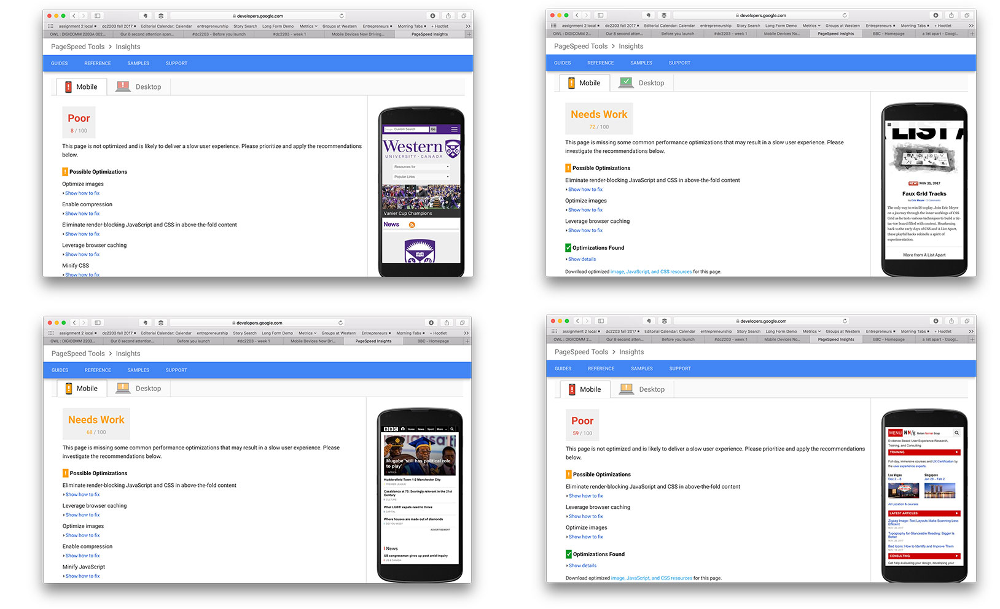PageSpeed Tool
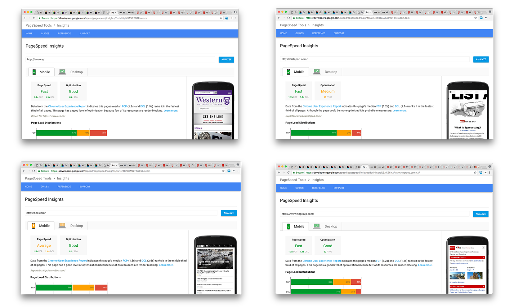TestMySite Tool
https://testmysite.thinkwithgoogle.com/
<9 seconds to pass
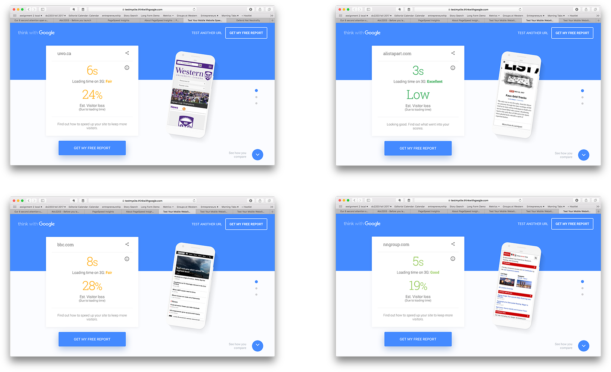TestMySite Tool
https://testmysite.thinkwithgoogle.com/
<9 seconds to pass
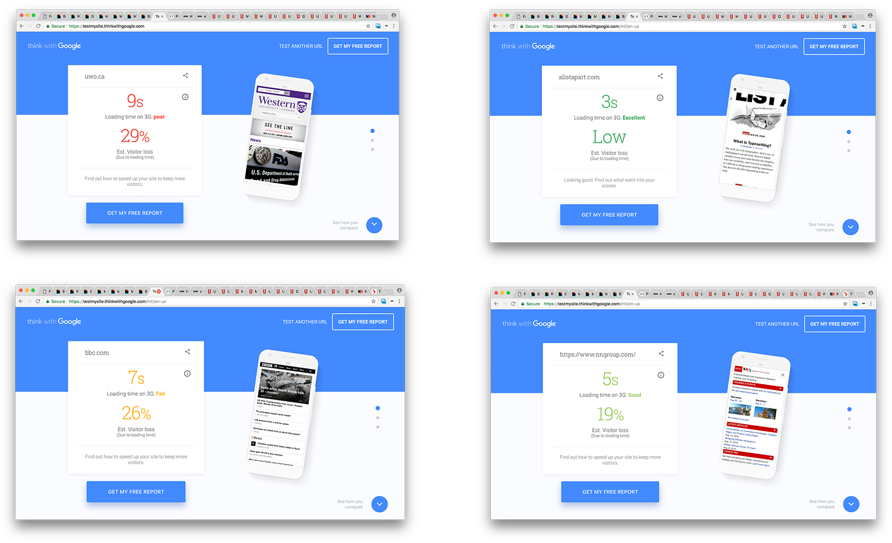Source: https://mathiasbynens.be/demo/jquery-size
PageSpeed Best Practices
- Avoid redirects
- Minify HTML, CSS & Javascript
- Optimize Images
- Minimize external/linked resources
- Avoid Flash, Silverlight & Java
- Use 16px font size (or larger!) & relative scale
- Line height of 1.2em
Facebook Instant Articles
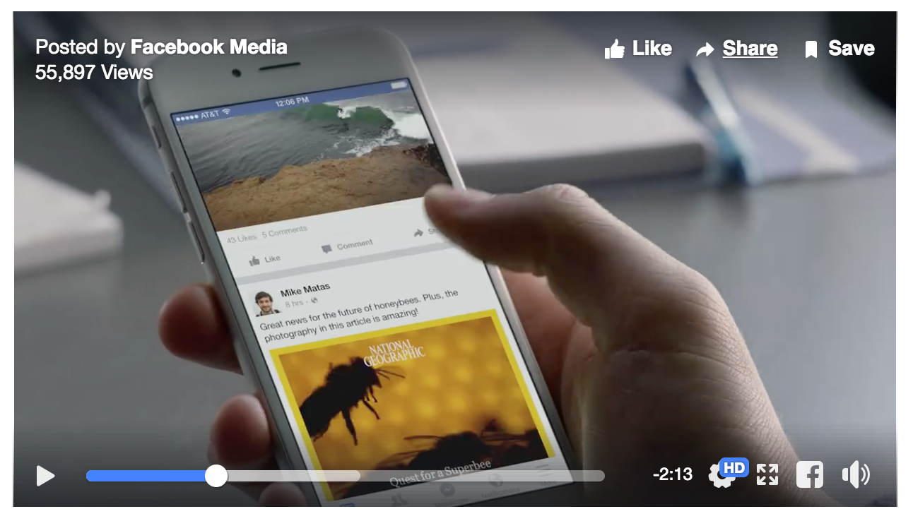Facebook Instant Articles
People share a lot of articles on Facebook, particularly on our mobile app. To date, however, these stories take an average of eight seconds to load, by far the slowest single content type on Facebook. Instant Articles makes the reading experience as much as ten times faster than standard mobile web articles.
- Facebook Media Release, May 2015.
Google AMP
AMP now represents seven percent of traffic for top publishers in the US ... What we’re seeing is that, on the one-year anniversary of Google’s efforts to speed up the mobile web, many consumers have welcomed this technology as a fast and efficient way to access content on their mobile devices.
- Google AMP: One Year Later, Adobe.
What AMP asks of us:
- User Experience > Developer Experience > Ease of Implementation.
- Only do things if they can be made fast.
- Don’t design for a hypothetical faster future browser.
- Prioritise things that improve the user experience – but compromise when needed.
- Don’t break the web.
- No whitelists.
- Solve problems on the right layer.


In June 2014, a twister ripped through the town of Angus, Ont., leaving 100 battered homes and 300 displaced people. Longer nails and hurricane straps keep roofs on houses for up to an EF2 tornado, the very kind that hit Angus. https://t.co/sJ7OCZcO0F
— Western University (@WesternU) August 12, 2018
Start-up business puts learning to work: DAN Management students launch Food Fund, a food delivery service focused on reducing food waste. https://t.co/uL46dNMRl9 #takeflightwesternu pic.twitter.com/mFxhq8CsDz
— Western University (@WesternU) August 1, 2018
Hopefully I've made my case for standards and the craft.
Now let's talk accessibility.
Usability
Possible for a standard user with standard equipment & standard ability
Source: Accessibility & Usability at Penn State, http://accessibility.psu.edu/accommodations/usability/
Usability
- Something is usable if a person of average (or even below average) ability and experience ...
- can figure out how to use the thing
- to accomplish some desired goal
- without it being more trouble than it’s worth
Usability can be defined as ...
- Learnability: How easy is it for users to accomplish basic tasks the first time they encounter the design?
- Efficiency: Once users have learned the design, how quickly can they perform tasks?
- Memorability: When users return to the design after a period of not using it, how easily can they reestablish proficiency?
- Errors: How many errors do users make, how severe are these errors, and how easily can they recover from the errors?
- Satisfaction: How pleasant is it to use the design?
Source: Jakob Nielsen, "Usability 101", 2012.
Jakob's Law
Users spend most of their time on other sites. This means that users prefer your site to work the same way as all the other sites they already know. Design for patterns for which users are accustomed.
Accessibility
"The UN Convention on the Rights of Persons with Disabilities recognizes access to information and communications technologies, including the Web, as a basic human right."
- W3C
Usability
Possible for a standard user with standard equipment & standard ability
Accessibility
Possible for anyone, regardless of equipment or ability.
Source: Accessibility & Usability at Penn State, http://accessibility.psu.edu/accommodations/usability/
Accessibility
... is about all sorts of people
in all sorts of situations ...
Web Accessibility in Ontario
- Who? All private and non-profit organizations (with 50+ ppl); AND all public sector organizations.
- What? Must meet Web Content Accessibility Guidelines (WCAG) 2.0 Level A.
- When? January 1, 2014 (AA by January 1, 2021).
Reading: https://www.ontario.ca/page/how-make-websites-accessible
WCAG 2.0
- Provide text alternatives for non-text content.
- Provide captions and other alternatives for multimedia.
- Create content that can be presented in different ways, including by assistive technologies, without losing meaning.
- Make it easier for users to see and hear content.
Perceivable
WCAG 2.0
- Make all functionality available from a keyboard.
- Give users enough time to read and use content.
- Do not use content that causes seizures.
- Help users navigate and find content.
Operable
WCAG 2.0
- Make text readable and understandable.
- Make content appear and operate in predictable ways.
- Help users avoid and correct mistakes.
Understandable
- Maximize compatibility with current and future user tools.
Robust
WAVE
- Web accessibility scan powered by WebAIM
- Flags errors, as well as features.
- wave.webaim.org
Colour Blindness & Contrast
- 4.5% of the population (8% of males).
- Avoid relying exclusively on colour for meaning or readability (i.e. links, buttons, forms, graphs).
- Ensure a contrast ratio of 4.5:1 for normal text and 3:1 for large text (14 point and bold or larger, or 18 point or larger).”
https://www.smashingmagazine.com/2016/06/improving-color-accessibility-for-color-blind-users/
Colour Blindness & Contrast

https://www.smashingmagazine.com/2016/06/improving-color-accessibility-for-color-blind-users/
Background Images


https://www.smashingmagazine.com/2016/06/improving-color-accessibility-for-color-blind-users/
But what about social?
Please see previous slides.
Just kidding!
Except not really.
Web rules apply (to social):
- Provide text alternatives.
- Follow standards.
- Make it easier for users.
- Give users enough time to consume your content.
- Don't cause seizures.
- Be readable (contrast, clutter)
- Use text for text, and image for image.
Provide Text Alternatives
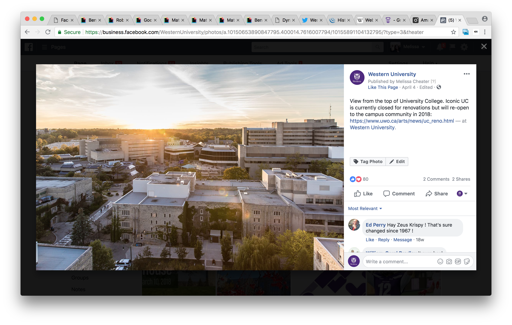Provide Text Alternatives
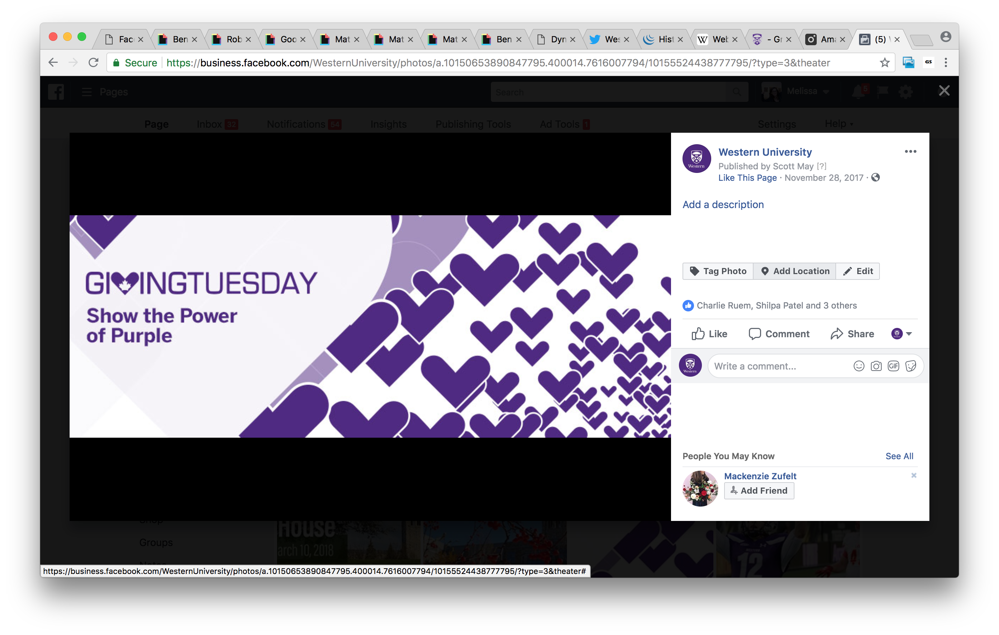Provide Text Alternatives
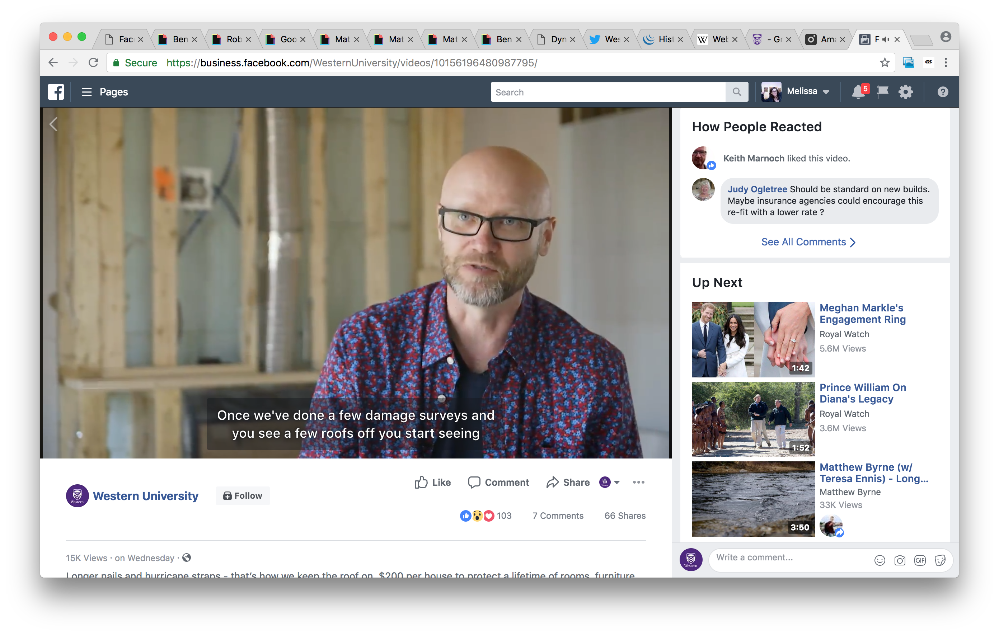Provide Text Alternatives
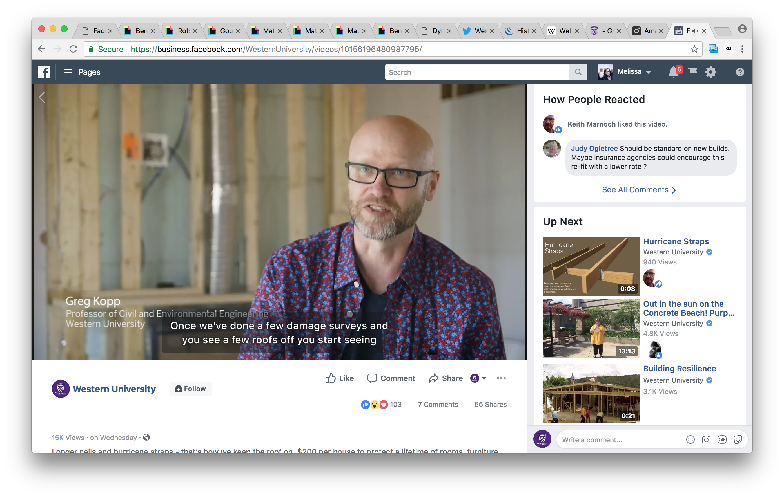Provide Text Alternatives
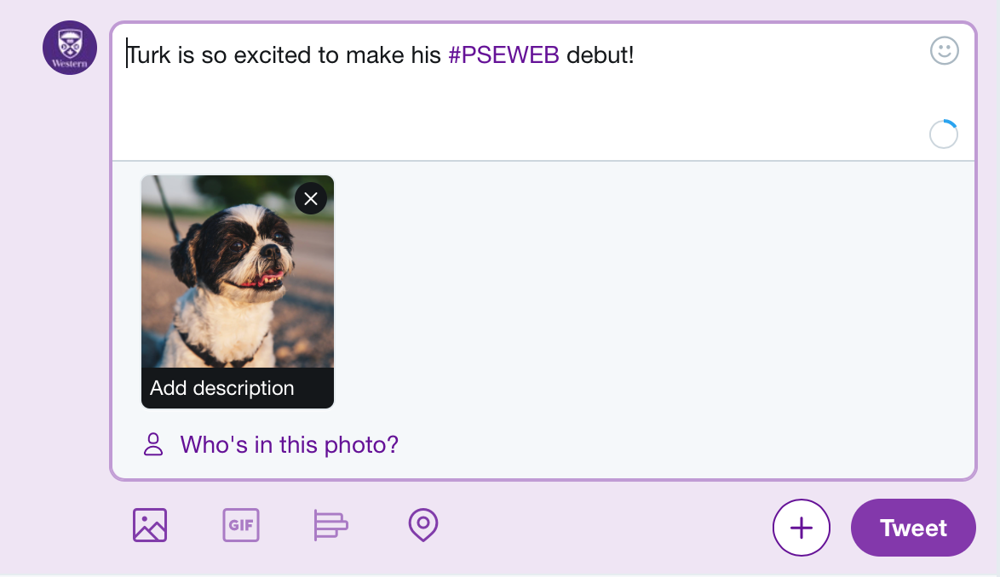Provide Text Alternatives
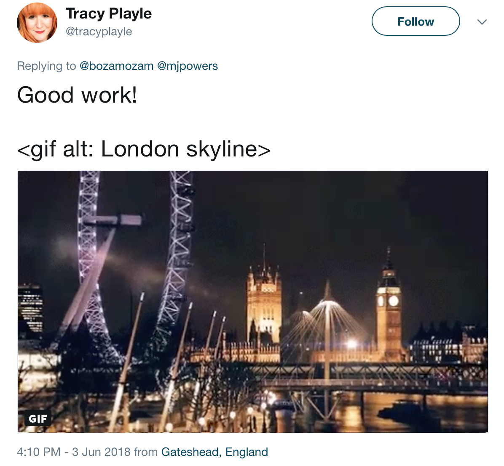Ok, but Instagram?
- Be descriptive, not sassy. Or both.
- [Image Alt]:
Instagram & Twitter Video
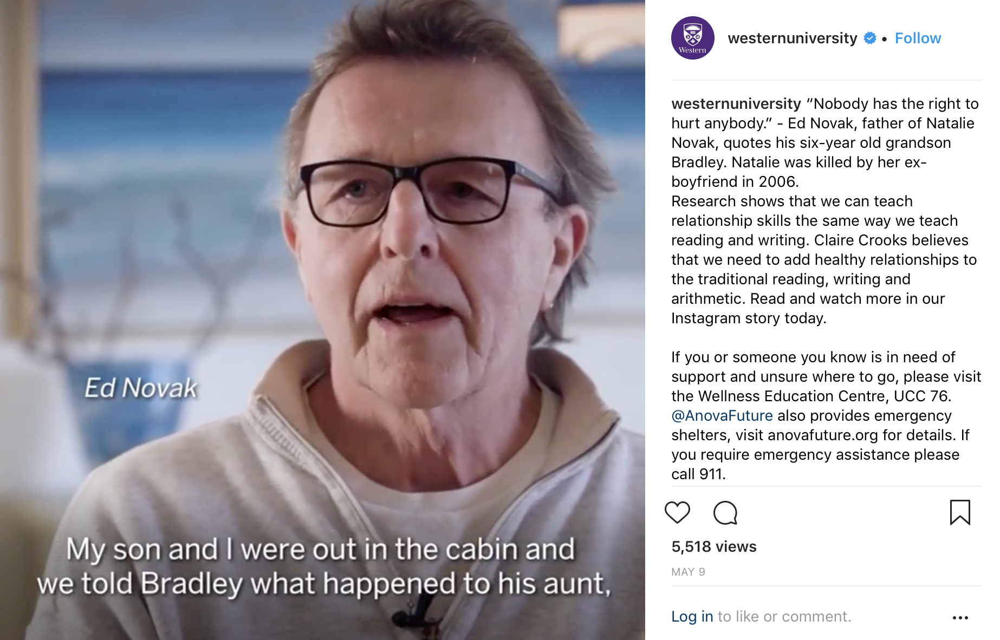So how we build for ...
In June 2014, a twister ripped through the town of Angus, Ont., leaving 100 battered homes and 300 displaced people. Longer nails and hurricane straps keep roofs on houses for up to an EF2 tornado, the very kind that hit Angus. https://t.co/sJ7OCZcO0F
— Western University (@WesternU) August 12, 2018
The power of the Web is in its universality.
Access by everyone regardless of disability is an essential aspect.
- Tim Berners-Lee, W3C Director and inventor of the World Wide Web